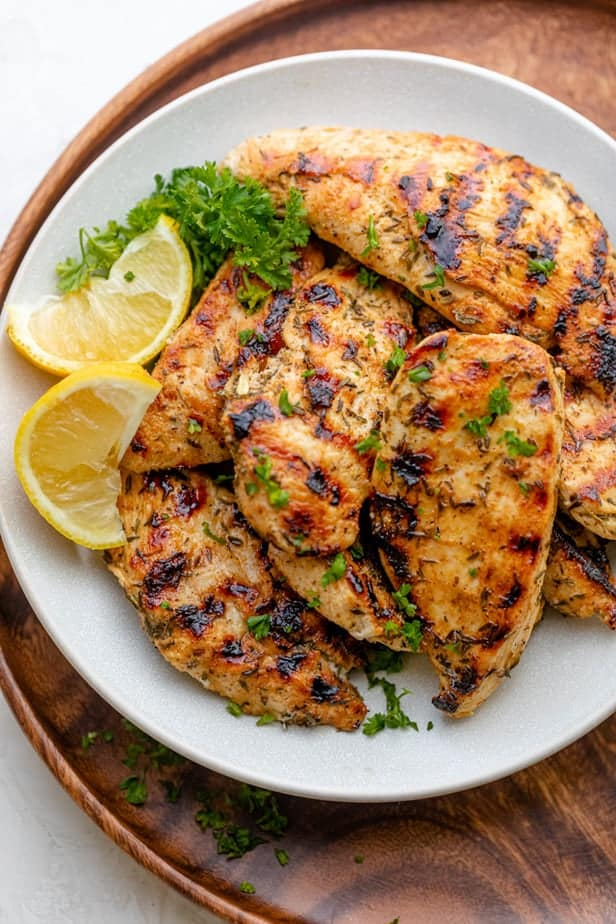

Tendies

So much flavor, when you bite it, it bites you back!
This shit right here, boy!
As long as your electricity bill is paid, getting started on this recipe is easier than finding the police in a white neighborhood. We are going to use steak seasoning on chicken. Don't sue me. Lets get it.
Ingredients
- Chicken tenders
- Montreal steak seasoning
- Olive oil
- Italian dressing
Steps
- Put chicken tenders in large bowl.
- Coat tenders in olive oil.
- Generously sprink on Montreal steak seasoning.
- Mix together.
- Add Italian dressing and mix one final time.
- Set grill to medium heat.
- Cook for about 4 mins on each side and be mindful of grill marks.